NeurIPS 2026 · preprint
DiLaDiff: Distilled Latent-Augmented Diffusion for Language Modeling
NVIDIA
tl;dr
Diffusion language models can't decode many tokens in parallel because they assume token independence. DiLaDiff fixes this with a continuous latent that captures token correlations, learned by a latent diffusion model and then self-distilled into a 5-step generative model. The result: 7× wall-time speed-up over masked diffusion baselines at higher generation quality, with the latent computed in negligible time compared to discrete decoding.
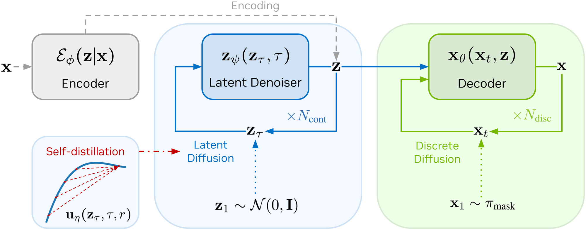
Abstract
Diffusion language models intrinsically fail to capture correlations between decoded tokens, which leads to a harsh trade-off between sampling quality and throughput. To solve this issue, we propose DiLaDiff, a variant of masked diffusion language models with three components: (1) a continuous latent space with semantic capabilities, learned by an auto-encoder fine-tuned from an existing masked diffusion language model; (2) a latent diffusion model learning the prior over the encoder distribution; (3) a consistency model distilling the learned prior into a few-step latent generative model. We show that, even without distillation, our latent-guided diffusion model outperforms the masked diffusion baseline while significantly accelerating inference. Consistency distillation further lowers the computational overhead of continuous diffusion, such that the latent is generated in negligible time compared to discrete decoding.
Why latents fix diffusion LMs
The problem · diffusion LMs ignore token correlations at decoding time
Auto-regressive language models are trained with teacher forcing and recover an exact factorization of the joint likelihood — token by token, left to right. Diffusion language models, in contrast, are trained with an ELBO that gives a factorized denoising posterior: each token is predicted independently from the rest of the noisy context. That factorization is exact only when you sample one token at a time. The moment the model is asked to decode several tokens in parallel, those tokens are treated as conditionally independent — but in natural language they are not.
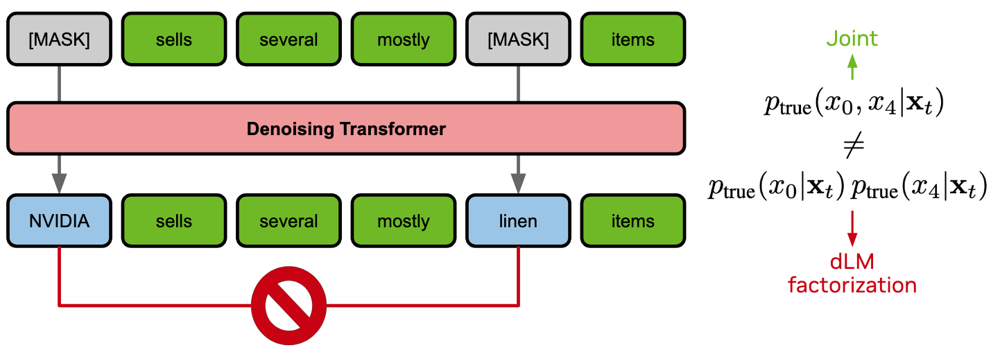
The practical consequence is a brutal speed–quality trade-off: pushing more tokens per forward pass tanks generation quality.
The fix · condition on a latent that absorbs the correlations
If we hand the denoiser an extra channel \(\mathbf{z}\) that already captures the joint structure of the clean sequence, then the factorized posterior becomes exact in expectation over \(\mathbf{z}\).
- The conditional denoiser factorizes. Conditional on the latent \(\mathbf{z}\), the clean-data denoiser truly factorizes across tokens — all token correlations have been absorbed into \(\mathbf{z}\): \[ q^{\theta}(\mathbf{x}_0 \mid \mathbf{z}) \;=\; \prod_{\ell} q^{\theta}(\mathbf{x}_0^{\ell} \mid \mathbf{z}). \]
- The forward kernel already factorizes. The masking process is independent across tokens (whether a token is masked is decided context-free), so factorization is automatic — no latent required: \[ q(\mathbf{x}_t \mid \mathbf{x}_s) \;=\; \prod_{\ell} q(\mathbf{x}_t^{\ell} \mid \mathbf{x}_s^{\ell}). \]
- By Bayes, the reverse posterior factorizes too. Combining the two and exploiting and exploiting the forward kernel's Markove properties yields a fully factorized reverse posterior: \[ q^{\theta}_{s\mid t}(\mathbf{x}_s \mid \mathbf{x}_t, \mathbf{z}) \;=\; \prod_{\ell} q^{\theta}_{s\mid t}(\mathbf{x}_s^{\ell} \mid \mathbf{x}_t^{\ell}, \mathbf{z}). \]
The caveat in step 3 is the whole game: we now need an auto-encoder that learns a useful \(\mathbf{z}\), a generative model for sampling \(\mathbf{z}\) from scratch at inference, and a way to make that sampling fast enough not to eat the parallel-decoding gains. The next three stages each tackle one of those problems.
Method walkthrough
Stage 1 — Auto-encoding text
We craft the latent space by fine-tuning an auto-encoder on top of pre-trained contextual embeddings, with the decoder warm-started from an existing masked diffusion LM. The auto-encoder is built incrementally — scrub through to see each component drop in.
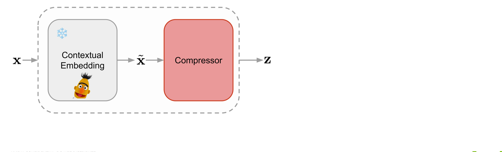
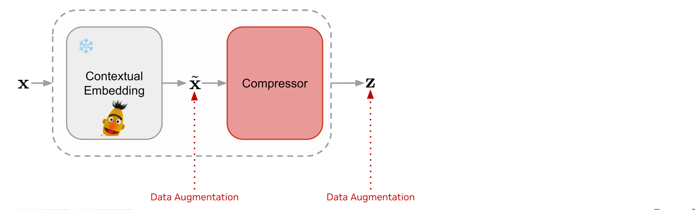
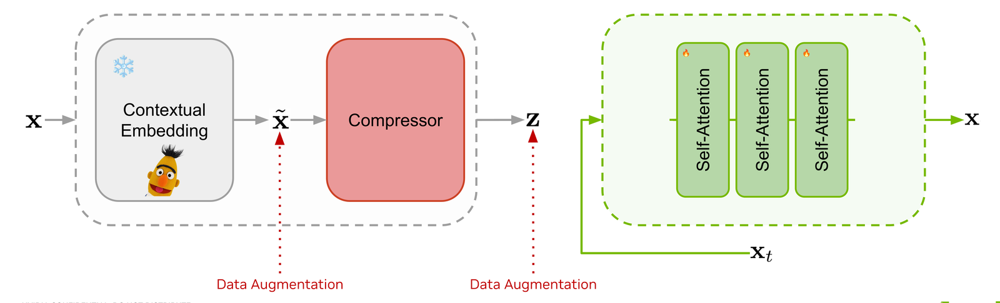
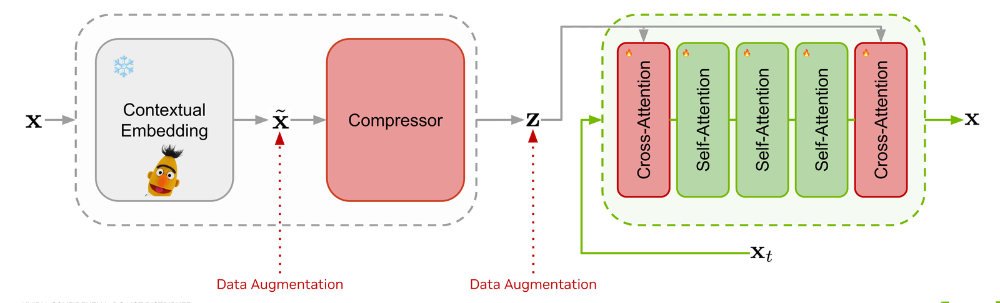
Pre-trained contextual embeddings (frozen BERT) are passed through a Perceiver-style compressor that produces a sequence of latents z shorter than the token sequence..
Without regularization the latent space is too sparse for a generative model to learn. We inject Gaussian noise on the embeddings, and random masking on both embeddings and latents, to push the auto-encoder toward a smoother, diffusion-friendly representation.
Rather than training a decoder from scratch, we initialize the self-attention stack from a pretrained masked diffusion language model. This gives us robust token-space decoding for free and keeps the latent's job narrow: just capture global context.
Two zero-initialized cross-attention layers wrap the decoder so its hidden state can attend to the latent z. With latent dropout in training, the model degrades gracefully to the original dLM behaviour when no latent is provided.
Stage 2 — Modelling the latent prior (LaDiff)
With the auto-encoder frozen, we learn the prior p(z) with a standard continuous diffusion model trained on encoder samples. At inference, we run the probability-flow ODE in the latent space, then hand the resulting z to the discrete decoder. We call this hybrid model LaDiff.
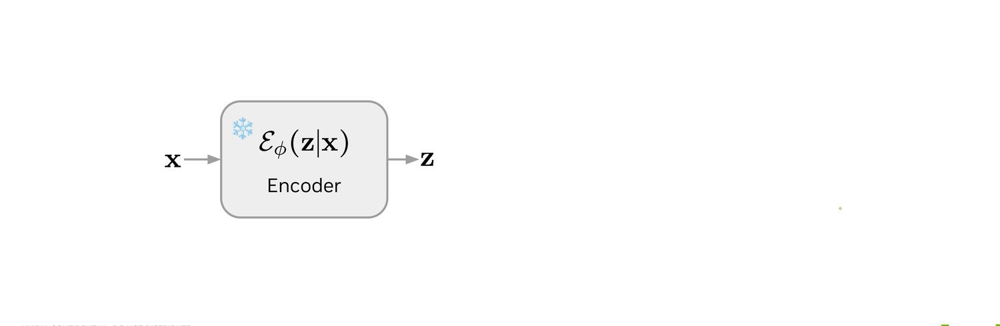
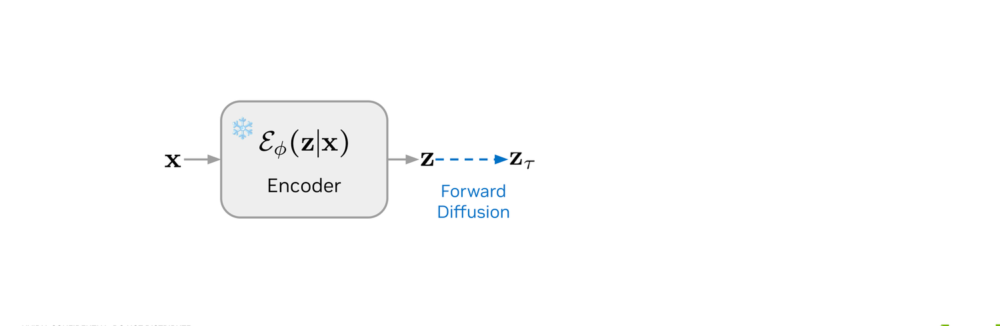
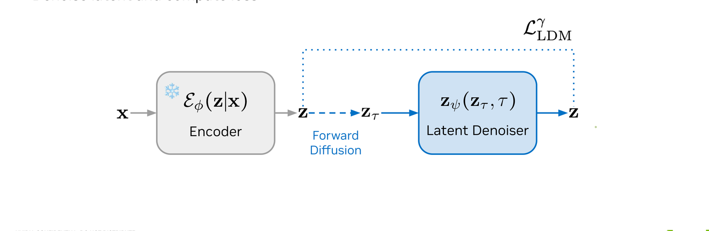
The clean sequence x is encoded into a latent z by the frozen Stage-1 encoder Eϕ.
A noise level τ is sampled, and z is perturbed to zτ with a standard Gaussian forward kernel — exactly the standard continuous diffusion setup, just in the latent space.
The latent denoiser zψ(zτ, τ) is trained to reconstruct the clean latent with an LDM L2 loss. At inference we solve the reverse probability-flow ODE to draw a fresh z, then hand it off to the discrete decoder for masked-diffusion sampling.
Stage 3 — Self-distilling latent trajectories (DiLaDiff)
At 200 NFEs the latent diffusion alone eats most of the wall-time budget — defeating the speed-up. We distill the LaDiff teacher into a few-step student via MeanFlow. The construction has three sub-steps: identify what's wrong with one-step velocity sampling, fix it with an average-velocity correction, and train the correction by self-distillation.
3.1 · limitations of one-step ODE sampling
The latent denoiser computes an instantaneous velocity — the tangent to the ODE trajectory. Using it for one big Euler step is fine when the step is small or the trajectory is straight, but it falls apart when both fail.
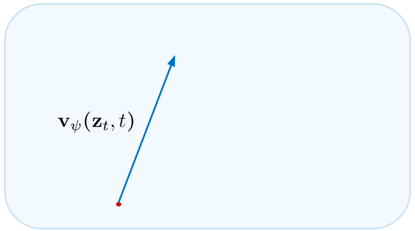
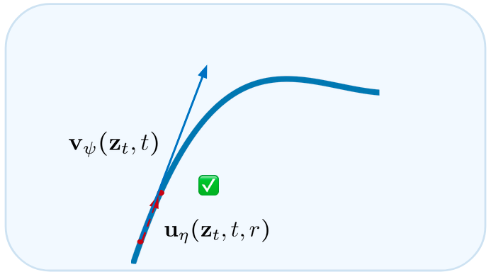
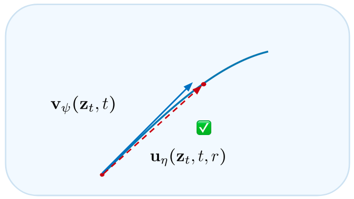
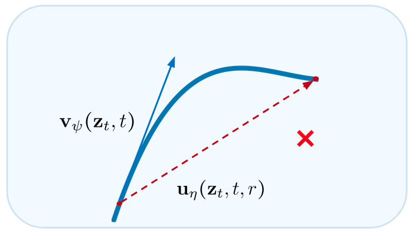
The trained denoiser gives us vψ(zt, t), the tangent to the ODE path at the current point. One Euler step follows that tangent.
For a small enough step Δt, the tangent approximates the chord well and Euler sampling lands close to the true trajectory. This is the many-step regime.
If the ODE path is nearly straight, even a large step along the tangent stays close to the trajectory. This is what teachers with straight probability-flow ODEs exploit.
In the general few-step ODE sampling case, the steps are big and the trajectory is curved. The tangent misses the target by a wide margin — the red ✗. The single-step Euler velocity is no longer the right object to use.
3.2 · the MeanFlow correction
Instead of the instantaneous velocity, the student parameterizes the average velocity \(\mathbf{u}_\eta(\mathbf{z}_t, t, r)\) over an interval \([r, t]\) — that's the right object for a big Euler step. MeanFlow corrects the teacher's tangent with a tangent term, and the tangent itself is obtained by self-distillation: a stop-gradient through the Jacobian of the student. The training target reads
\[ \mathbf{u}_{\text{tgt}} \;=\; \mathbf{v}_\psi(\mathbf{z}_t, t) \;-\; (t - r)\,\big(\mathbf{v}_\psi(\mathbf{z}_t, t)\,\partial_{\mathbf{z}}\mathbf{u}_\eta \,+\, \partial_t \mathbf{u}_\eta\big), \]and the student is fit with a simple regression loss
\[ \mathcal{L}_{\text{MeanFlow}}(\eta) \;=\; \mathbb{E}\;\big\|\,\mathbf{u}_\eta(\mathbf{z}_t, t, r) \;-\; \operatorname{stopgrad}(\mathbf{u}_{\text{tgt}})\,\big\|_2^2. \]The result is a single network that can be plugged in place of the teacher's velocity for big ODE solver steps.
3.3 · training the student by self-distillation
Putting it together, DiLaDiff is trained on the same encoder + forward-diffusion setup as LaDiff, with the MeanFlow loss matching the student's average velocity against the teacher-derived target.
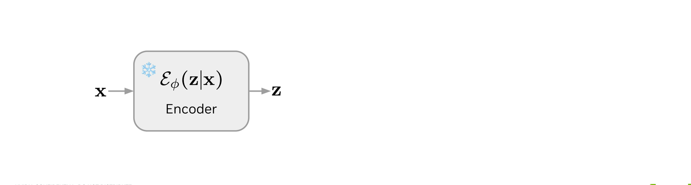
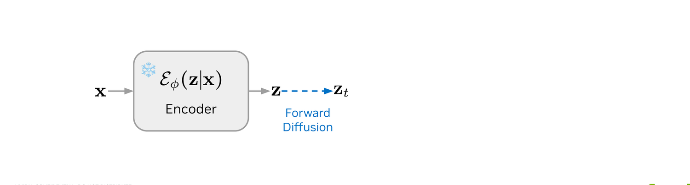
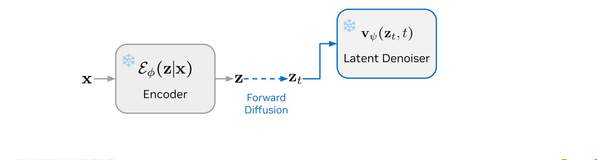
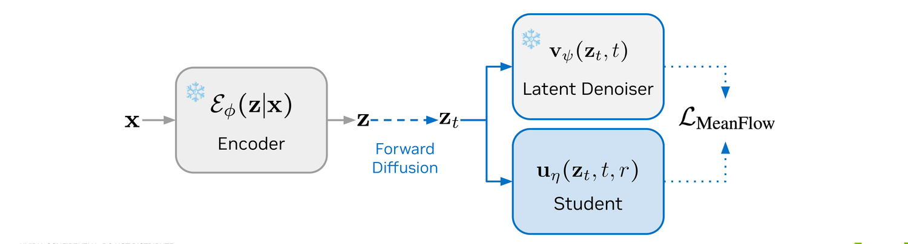
Exactly as in Stage 2: a clean sequence x goes through the frozen encoder Eϕ to give z.
We pick a target noise level t and a smaller one r, then perturb z to zt with the same forward kernel as LaDiff.
The frozen LaDiff teacher vψ(zt, t) provides the instantaneous velocity needed to assemble the MeanFlow target.
The student uη(zt, t, r) is updated with the MeanFlow loss against the teacher-derived target. After 25k steps the student matches the teacher with Ncont = 5 instead of 200.
Results
Latent space analysis
Before measuring downstream generation quality, we check that the auto-encoder's latent actually does what we asked of it: capture sentence-level semantics. We perturb a latent with Gaussian noise and decode it 8 steps, then measure semantic distance against the source.
BERTScore-F1 between sentences decoded from the same latent drops monotonically as we add noise — both against the clean source at \(t = 0\) and against the ground-truth sentence. The latent carries semantics inherited from the contextual embedding.
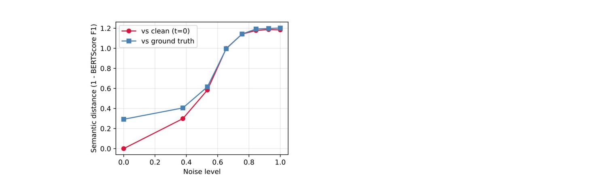
Decomposing further: intra-pool sentences (decoded from the same latent with different seeds) stay close in BERTScore, while inter-pool sentences (different latent, same seed) drop sharply. The latent captures sentence-level meaning while the decoder contributes word-level diversity.
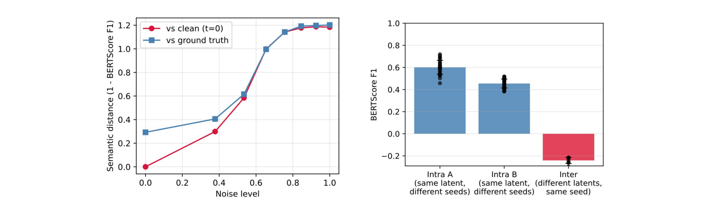
LaDiff (no distillation)
Even before distillation, conditioning the masked-diffusion decoder on a learned latent pays off. The undistilled LaDiff sits on a strictly better speed–quality Pareto frontier than MDLM, preserves diversity at low temperatures, and lets us exploit a confidence-based token selection that MDLM cannot use reliably.
LaDiff dominates the speed–quality Pareto frontier. At equal MAUVE and GenPPL, LaDiff is roughly 7× faster than MDLM. At equal throughput (16 tokens per forward pass) it is also strictly better in quality.
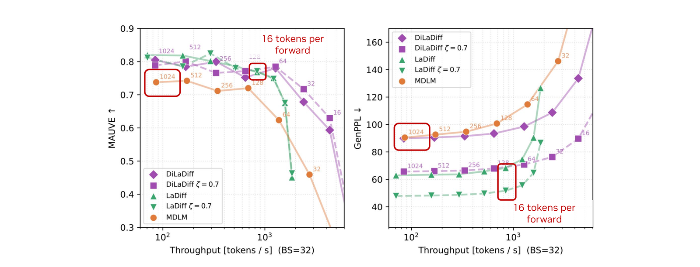
Diversity is captured in the latent. Lowering the decoder temperature \(\zeta\) normally collapses MDLM samples — entropy and MAUVE fall off a cliff. LaDiff stays put because the latent has already absorbed sentence-level diversity, freeing the decoder temperature to do token-level sharpening.
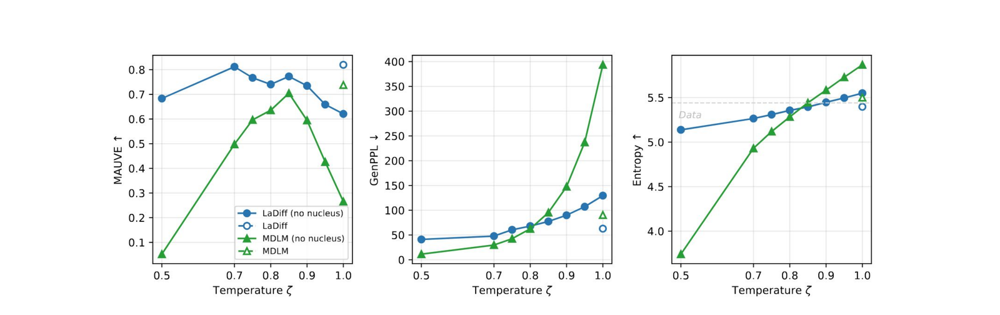
Confidence-based token selection is unlocked. Choosing which masked positions to fill in by the decoder's own confidence is unreliable for MDLM at small scales (the dashed confidence curves collapse). With LaDiff, confidence-based selection matches or beats random selection across every \(N_{\text{disc}}\).
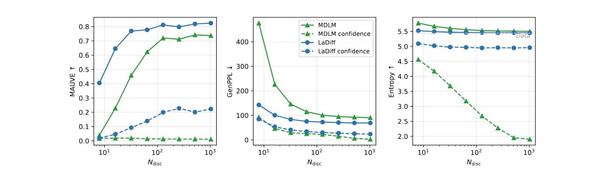
DiLaDiff (with self-distillation)
Self-distilling the latent denoiser removes the continuous-diffusion bottleneck. With only 5 latent steps, DiLaDiff stays on the same Pareto frontier as LaDiff at 200 steps — the latent is essentially free.
DiLaDiff matches the teacher with 40× fewer latent steps. With \(N_{\text{cont}} = 5\) latent diffusion steps, DiLaDiff hits the same Pareto frontier as the LaDiff teacher with \(N_{\text{cont}} = 200\). Latent diffusion now accounts for ~5% of the wall-time — effectively free.
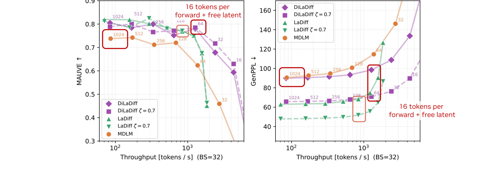
MeanFlow and Terminal Velocity Matching agree. The MeanFlow correction and Terminal Velocity Matching give nearly identical curves across MAUVE, GenPPL, and Entropy as \(N_{\text{cont}}\) sweeps from 5 to 200. Both clearly outperform the dashed teacher curve at the small-\(N_{\text{cont}}\) end.
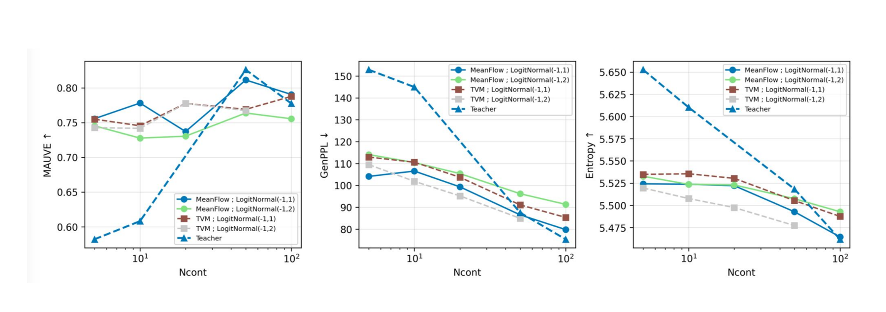
- 7× wall-time speed-up over MDLM at the optimal settings, while improving GenPPL by 22.2 absolute (24.5% relative) and MAUVE by 0.035 (4% relative).
- Negligible latent overhead after distillation: DiLaDiff with
Ncont=5, Ndisc=64spends only 5% of wall-time on continuous diffusion (vs 111% for undistilled LaDiff). - Semantic latent: BERTScore-F1 between sentences decoded from the same latent stays high under perturbation, but drops for different latents — the latent really captures sentence-level meaning.
- Robust temperature sampling: LaDiff preserves entropy when lowering the decoder temperature, because diversity is already captured in the latent.
Citation
@article{lemercier2026diladiff,
title = {DiLaDiff: Distilled Latent-Augmented Diffusion for Language Modeling},
author = {Lemercier, Jean-Marie and Geffner, Tomas and Mardani, Morteza
and Kreis, Karsten and Vahdat, Arash and Juki{\'c}, Ante},
journal = {arXiv preprint},
year = {2026}
}